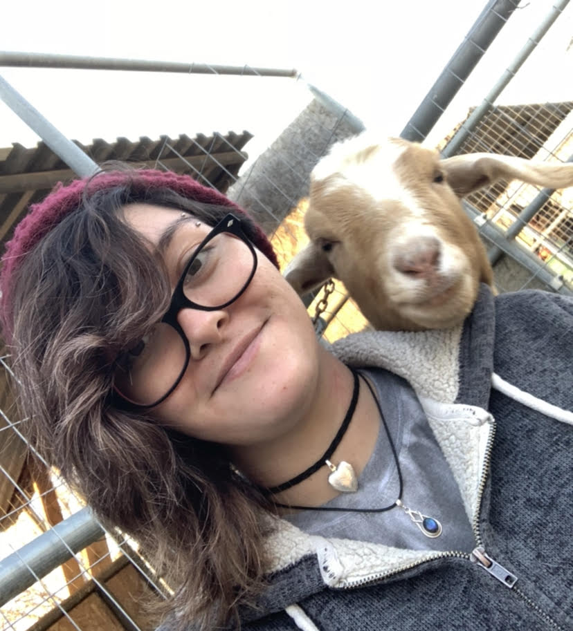

Results
I had to cut our meeting short due to a migraine attack. Once I felt
better I tried making contact with Leo again but he was very unresponsive.
I ended up having to do most of the lab on my own again which I don't enjoy
doing. Especially since I wasn't feeling well at all.
For the vertically and horzontally centered image I used the the css listed in
Wes' lecture. I didnt make the div 30% wide because it didt center the image to my
content div so I made the div's width fill the container in terms of width.
During our meeting we were able to get div id="floated, div id="center-horz",
and div id="center-img" to work. Or at least I did, I gave Leo my solution
but he never followed up if it worked for him or not.

This is my centered image.

This is my vertically and horizontally centered image.